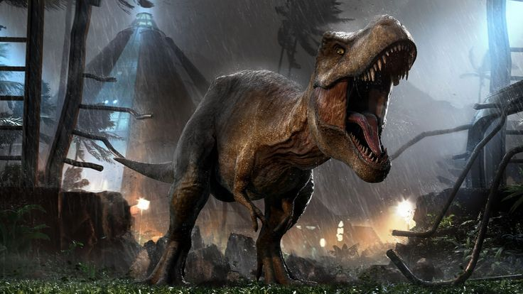
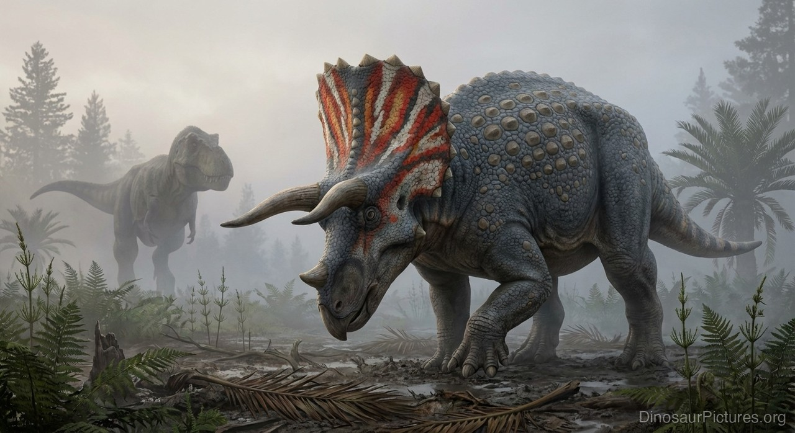
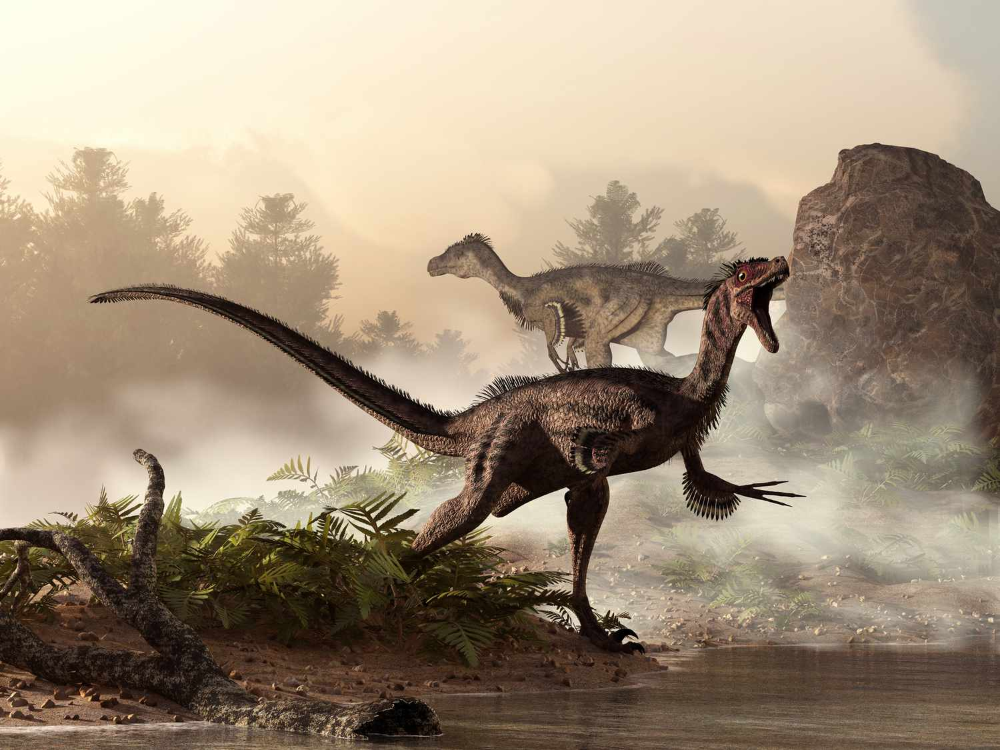
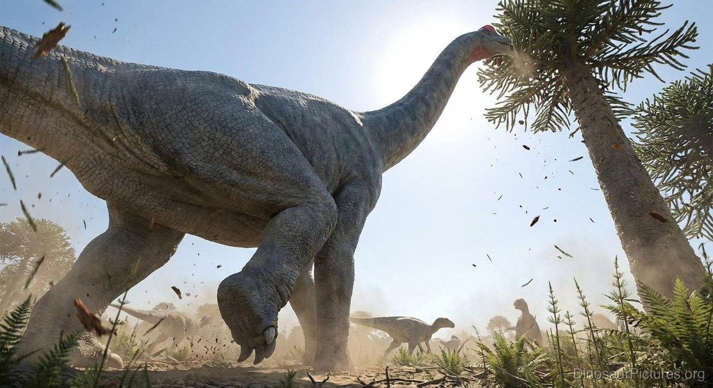
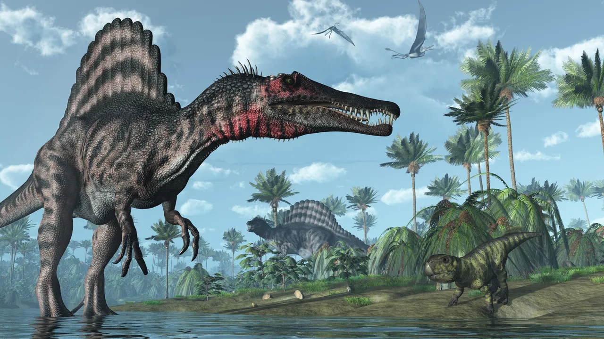
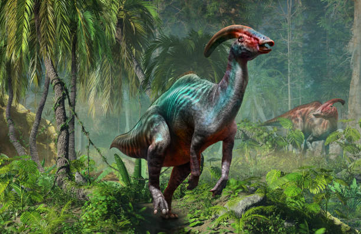

🦖 Galeri Dinosaurus
Kenali beberapa spesies dinosaurus paling ikonik yang pernah menguasai Bumi.

Tyrannosaurus Rex
Kapur 🦖 KarnivoraSalah satu predator darat terbesar dengan gigitan paling kuat.

Triceratops
Kapur 🦕 HerbivoraDinosaurus bertanduk tiga dengan pelindung kepala besar.

Velociraptor
Kapur 🦖 KarnivoraPredator kecil yang cepat, cerdas, dan sangat lincah.

Brachiosaurus
Jura 🦕 HerbivoraDinosaurus raksasa berleher panjang yang memakan daun pohon tinggi.

Stegosaurus
Jura 🦕 HerbivoraMemiliki lempeng besar di punggung dan duri tajam di ekor.

Spinosaurus
Kapur 🦖 KarnivoraPredator semi-akuatik dengan layar besar di punggungnya.

Ankylosaurus
Kapur 🦕 HerbivoraDinosaurus berzirah tebal dengan gada besar di ekornya.

Parasaurolophus
Kapur 🦕 HerbivoraDikenal karena jambul panjang yang digunakan untuk komunikasi.